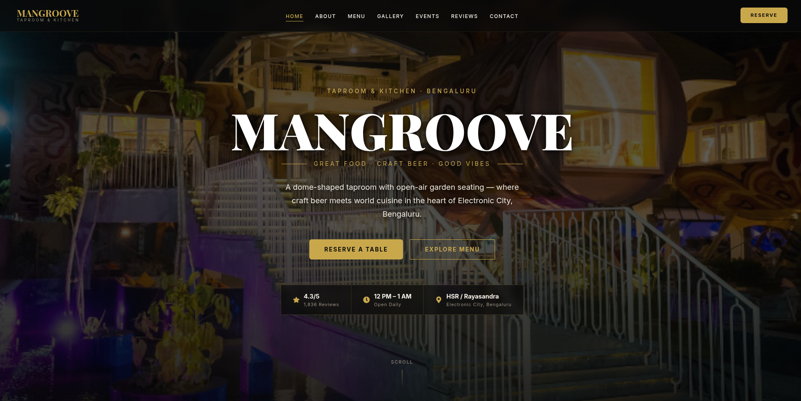

Crafting a Brand Website for a Taproom & Kitchen

Mangroove is a dome-shaped taproom and kitchen with open-air garden seating in Electronic City, Bengaluru. Known for great food, craft beer, and good vibes, they needed a website that captures their unique atmosphere.
The challenge was to translate the energy of a physical dining experience into a digital brand presence that drives table reservations and showcases their menu.
Mangroove had a strong physical presence but lacked a cohesive digital identity. Their brand story, unique venue design, and vibe weren't being communicated online.
Without a website, potential customers could only find Mangroove through social media or word of mouth, limiting their reach to new audiences searching online.
Table reservations were handled only through phone calls, creating a barrier for customers who prefer online booking, especially during peak hours.
I studied restaurant and taproom websites in Bengaluru to identify design patterns that work for F&B brands:
Age 22-35, lives or works in Electronic City. Looks for trendy hangout spots for after-work drinks and weekend plans. Discovers places through Instagram and Google searches.
Age 25-40, organizing team outings, birthday celebrations, or friend gatherings. Needs to check capacity, menu variety, and event options before booking for a group.
Studied Mangroove's physical identity — the dome architecture, garden seating, craft beer focus, and vibrant atmosphere. This informed the visual direction: bold, warm, and inviting.
Structured the site into: Home, About, Menu, Gallery, Events, Reviews, and Contact. Ensured the "Reserve a Table" CTA was prominent on every page.
Created a dark, moody aesthetic with warm lighting tones that mirror the actual venue ambiance. Used large typography for the brand name to create visual impact.
Crafted compelling copy: "Great Food. Craft Beer. Good Vibes." — simple, memorable, and captures what Mangroove is about. Added ratings, timing, and location for practical info.
Built the responsive website with smooth scroll interactions, image galleries, and an integrated reservation system. Deployed on Netlify for fast, reliable hosting.
Used a full-width venue photograph as the hero background with the "MANGROOVE" brand name in large, bold typography. This instantly communicates the venue's vibe and scale.
Chose a dark theme with warm amber and golden tones to reflect the venue's evening ambiance — craft beer bars and taprooms feel most authentic in warm, dim lighting.
Placed essential info (rating: 4.3/5, timing: 12PM-1AM, price range) directly below the hero. Visitors get key decision-making data without scrolling.
Two primary actions: "Reserve a Table" and "Explore Menu" — covering both intent-driven users (ready to book) and browsing users (still deciding).
Created an immersive gallery section showcasing the dome structure, garden seating, food plating, and events. For restaurants, "seeing is believing."
Maintained a casual, fun tone throughout the copy to match the venue's personality. The tagline "Great Food. Craft Beer. Good Vibes." sets the tone immediately.
Sections designed — Home, About, Menu, Gallery, Events, Reviews, Contact
Brand-consistent design that captures the venue's real-world atmosphere digitally
Table reservation accessible from any section through a persistent CTA button